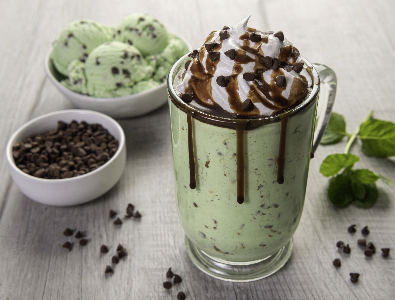

Chocolate Mint Milkshake

Description
This delightful treat is perfect for cooling off on a hot day or satisfying your sweet tooth anytime you crave a refreshing dessert.
Ingredients:
- 2 cups vanilla ice cream
- 1/2 cup milk (dairy or non-dairy)
- 1/2 cup unsweetened apple juice
- 1/4 cup chocolate chips or chocolate chunks
- 1/4 teaspoon peppermint extract (adjust to taste)
- Whipped cream (optional, for garnishmentment)
- Chocolate syrup (optional, for garnishmentment)
- Fresh mint leaves (optional, for garnishment)
Steps:
- Start by ensuring your ice cream is slightly softened. This will make it easier to blend.
- In a blender, combine the vanilla ice cream, milk, chocolate chips or chunks, and peppermint extract.
- Blend the ingredients on high until the mixture becomes smooth and creamy. You can taste the milkshake and adjust the mint extract to your preference. Add more for a stronger mint flavor or less for a milder one.
- Once blended to your liking, pour the chocolate mint milkshake into serving glasses.
- If desired, top each milkshake with whipped cream, a drizzle of chocolate syrup, and a fresh mint leaf for a decorative touch.
- Serve immediately with a straw and enjoy your homemade chocolate mint milkshake!
Enjoy your delicious chocolate mint milkshake!